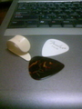

mixi動画はサービス終了しました
mixi動画はサービス終了しました
２番目の奴なんかはそもそもスティール弦で弾くようなモンじゃないと思うんですが

最近エレキギターも弾き始めたし、そうするとやっぱりピック持つのもできたほうがいいかなあとか。 なわけで、サムピック買ってきて削ったり、フラットピックを入手したり。
しかし、いまやフラットピックなんて山のように種類があるのに、なぜむか～しからあるなんの変哲もないFenderなのかｗ
カポの使い方でも一ひねりするのを覚えたり、次回のソロライブは実験君大会になりそうですな＾＾